The Radeon Developer Panel¶
The Radeon Developer panel is part of a suite of tools that can be used by developers to optimize DirectX12 and Vulkan applications for AMD GCN graphics hardware. The suite is comprised of the following software:
Radeon Developer Mode Driver – This is shipped as part of the AMD public Adrenaline driver and supports the developer mode features required for profiling and debugging.
Radeon Developer Service (RDS) – A system tray application that unlocks the Developer Mode Driver features and supports communications with high level tools.
Radeon Developer Service - CLI (Headless RDS) – A console (i.e. non-GUI) application that unlocks the Developer Mode Driver features and supports communication with high level tools.
Radeon Developer Panel (RDP) – A GUI application that allows the developer to configure driver settings and generate profiles from DirectX12 and Vulkan applications.
Radeon GPU Profiler (RGP) – A GUI tool used to visualize and analyze the profile data.
This document describes how the Radeon Developer Panel can be used to profile frame-based applications on AMD GCN graphics hardware. The Radeon Developer Panel connects to the Radeon Developer Service in order to collect a profile.
How to profile your application¶
Profiling on a local system¶
IMPORTANT: The application you want to profile must NOT already be running. The panel needs to be configured in advance of starting your application.
- Start the RadeonDeveloperPanel.exe on your local system. The panel will startup up with the Connection tab already highlighted (see below).
{kind=link}
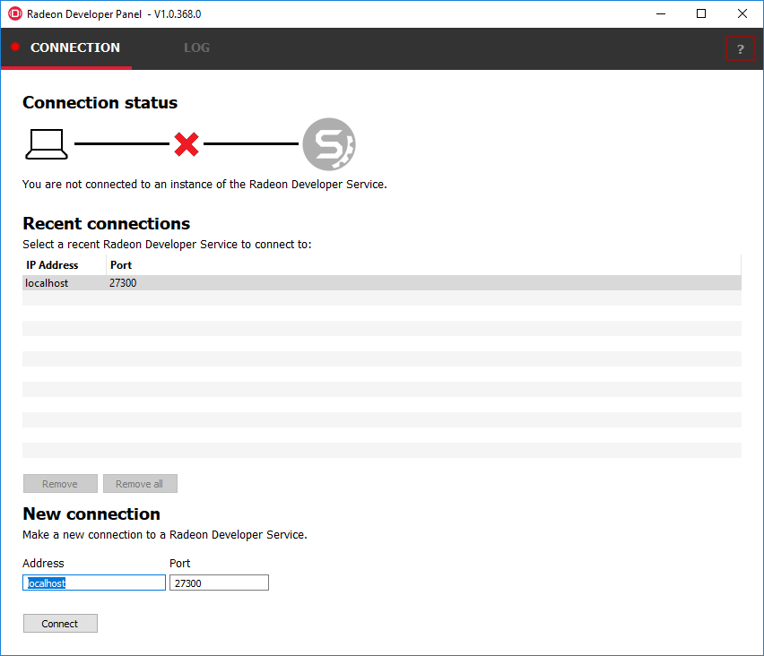
The UI has three main elements:
- Connection status – to the Radeon Developer Service (currently not connected)
- Recent connections – list shows a history of your previous connections
- New connection – section that allows you to make either a new local or remote connection
- Connect the Radeon Developer Panel to the Radeon Developer
Service using either of the following methods:
- Select the localhost entry in the “Recent connections” list, then click the “Connect” button. This will start the Radeon Developer Service on the local system and establish a connection.
- Double-click on any Recent connection, and RDP will attempt to establish a connection to RDS running on the given host.
Note that the red dot to left of the “CONNECTION” tab should change to green to indicate that the connection was successful.
You may get a “Failed to connect to RDS” pop up message when running the panel for the very first time. If the Radeon Developer Service is not running, the panel will try to start the service automatically for local connections and this can fail due to Windows file permissions (the Radeon Developer Service will not be a known application to Windows and the program will not be permitted to start). If you see this message try manually starting the “RadeonDeveloperService.exe” and connect again.
{kind=link}
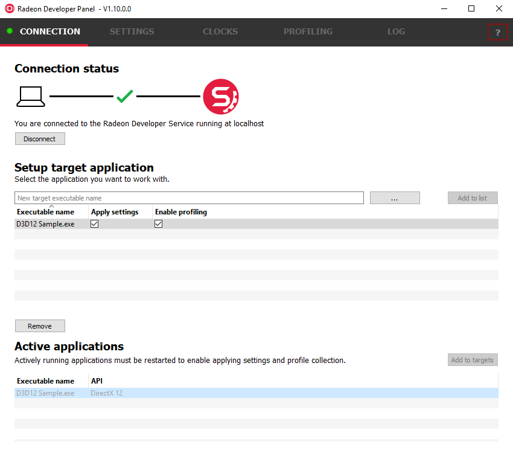
Select the executable you want to profile using either of the following methods:
- Use the “…” button to browse to the executable, or manually type it in the executable name textbox.
- Select an active process within the Active Applications table, and click the “Add to targets” button. The process will need to be restarted in order to apply settings at application startup, and to enable collection of RGP profiles.
Click the “Add to list” button to add the new executable to the list of processes that will start in Developer Mode.
The “Enable profiling” check box should be checked automatically for the application you just added to the list.
Start your application.
The driver will render an overlay on top of the application’s render window if all is working correctly. The overlay will indicate if Profiling is enabled for the application, and will display the Client Id that RDP uses to communicate with the process.
{kind=link}
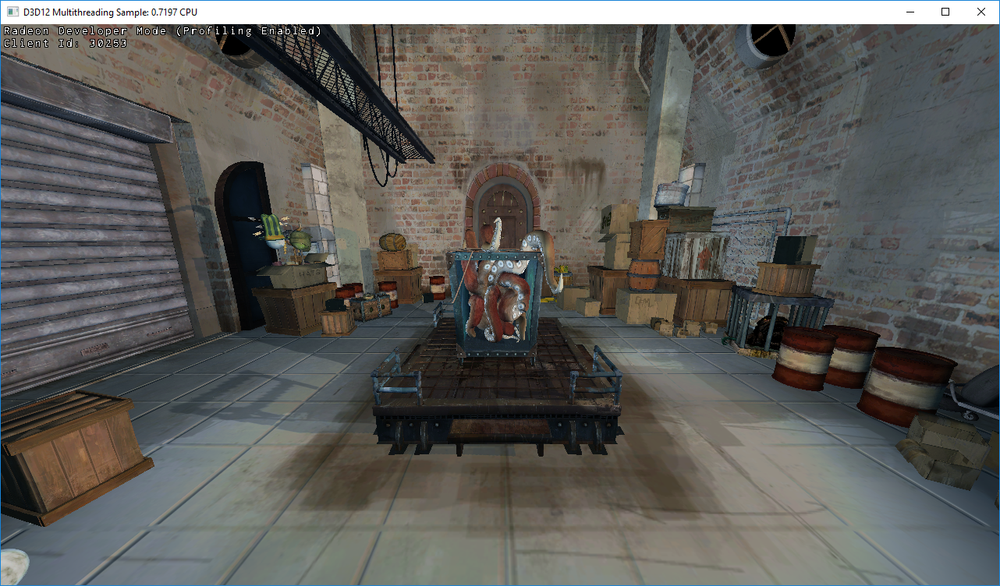
The panel will detect when your application has started, and will switch to the Profiling tab.
{kind=link}
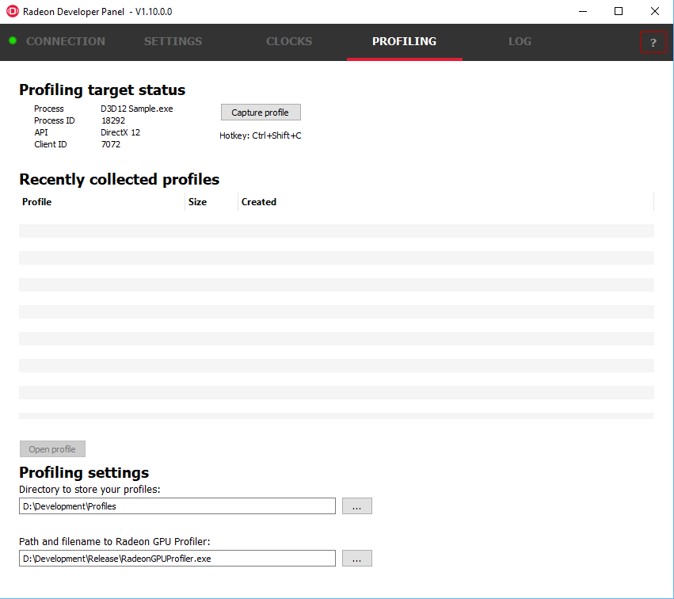
Click the “Capture profile” button or press the Ctrl + Shift + C hotkey to generate an RGP profile. The hotkey can be useful when capturing profiles from applications running full screen or when an app requires focus when rendering. After a few seconds a new profile should appear in the list below.
Note: Certain anti-virus software may block the hotkey feature from monitoring key presses.
Note to Linux users: The hotkey is only available when starting the panel with root privileges (ie sudo ./RadeonDeveloperPanel). Root privileges are needed in order to read the keyboard device, which by default is found in the path ‘/dev/input/by-path’, and is a file ending with ‘event-kbd’. If this path doesn’t exist or the keyboard device has a different name, copy the KeyboardDevice.txt file from the docs directory to the root folder where these tools are located and edit this file so it contains the full path and file name of the keyboard device on your system.
- Right-clicking on a row in the list of recent profiles will open a context menu for the selected file. The context menu allows you to quickly navigate to the profile location in the filesystem, and rename or delete the file.
{kind=link}
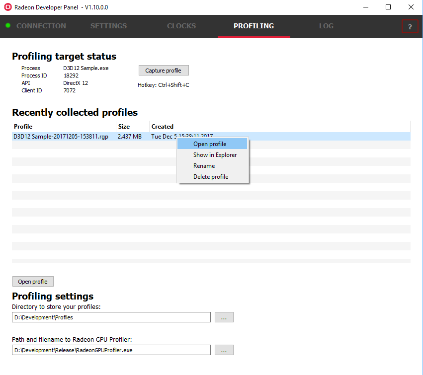
- To open a profile file in the Radeon GPU Profiler, select the profile in the list and click the “Open profile” button or double-click the selected row.
Profiling on a remote system¶
There are two variations of the Radeon Developer Service: The GUI based RadeonDeveloperService and the RadeonDeveloperServiceCLI (command line interface). For headless operating systems which do not support a graphical user interface, the RadeonDeveloperServiceCLI executable can be started from a terminal console window.
The following steps are used to connect the RadeoDeveloperPanel to a remote Radeon Developer Service:
- Start the RadeonDeveloperService or RadeonDeveloperServiceCLI
executable on the remote system.
- NOTE: RadeonDeveloperServiceCLI is a command line version of the Radeon Developer Service that has no UI components and is designed to run from the command line. Please note that no system tray icon will appear when the command line version of the service is running.
- Start the RadeonDeveloperPanel executable on your local system. The panel will start up with the Connection tab already highlighted (see below).
- In the New connection section, fill in the Address text box with the IP address of the remote system running the Radeon Developer Service.
- Click the “Connect new” button. This will establish a connection to the remote system. The red dot to left of the “CONNECTION” tab should change to green to indicate that the connection was successful.
{kind=link}
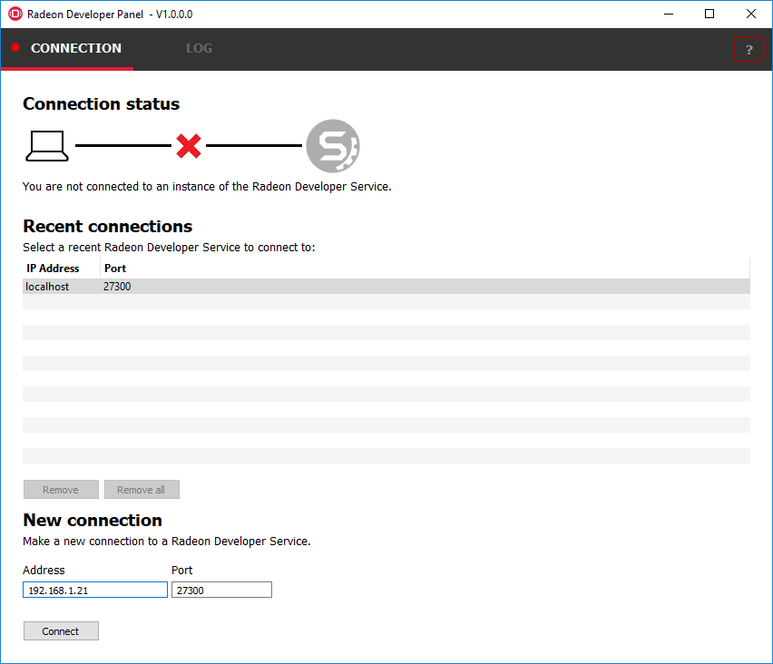
- Go to step 3 in “Profiling on a local system” above and continue.
How to use the Driver Settings¶
NOTE: Currently, the driver settings are only implemented for DirectX12. Vulkan driver settings will be available soon.
The Radeon developer Panel (RDP) allows the developer to modify driver settings to experiment with features that may affect performance and quality. When you run RDP for the first time the driver settings are empty in the tool and you will need to run your application with the panel once to retrieve the driver settings. This is a one-time setup process.
The important thing to remember is that when you change settings they will only be applied the next time you start the application. Changes to the settings do not effect a currently running application.
- To get started with settings configure your connection, connect, and setup your application as shown below.
- Start your application and let it run for a short while (few seconds) then terminate the process. This will populate the driver settings in the tool.
- Click on the Settings tab
- Currently, there are two categories of settings (Debug and General), and there are only 4 settings in total. Many more will be made available soon. The General settings are shown below. Click on the small arrow to the right of the setting name to see the possible values and descriptions. The “Default All” button will reset the values back to the original driver settings. Settings can also be exported and imported.
{kind=link}
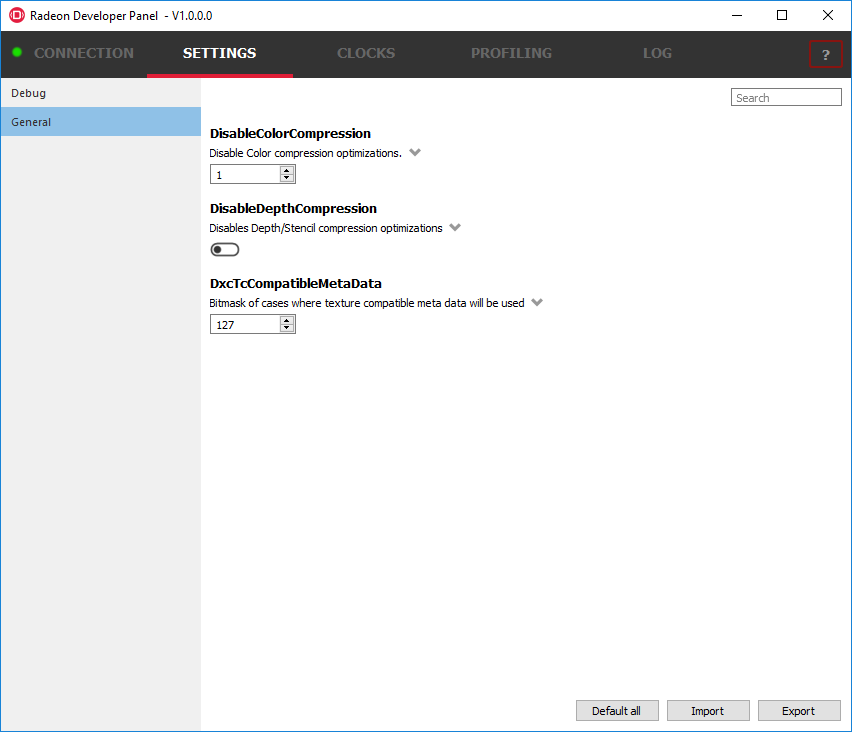
- Make the changes you require to the settings and then click on the Connection tab.
- Make sure you have selected the “Apply settings” checkbox on the application you wish to change the settings for.
- Start your application, the settings are applied by the panel as your application starts.
- Profile your application as described in the “How to profile your application” section above.
Using the Clock settings¶
The Radeon developer Panel (RDP) allows the developer to select from a number of clock modes.
{kind=link}
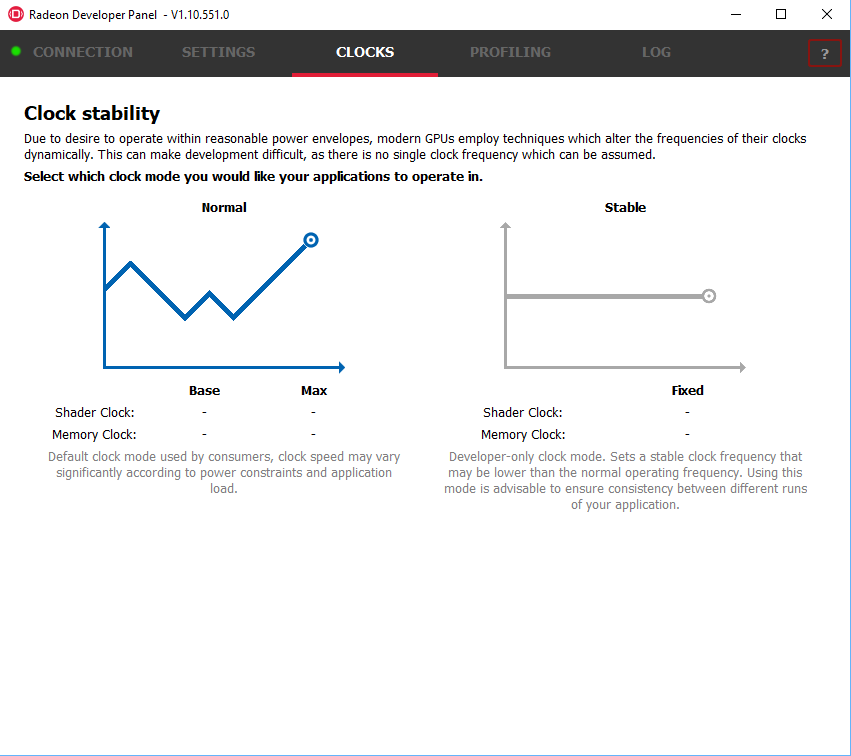
Normal clock mode will run the GPU as it would normally run your application. To ensure that the GPU runs within its designed power and temperature envelopes, it dynamically adjusts the internal clock frequency. This means that profiles taken of the same application may differ significantly, making side-by-side comparisons impossible.
Stable clock mode will run the GPU at a lower, fixed clock rate. Even though the application may run slower than normal, it will be much easier to compare profiles of the same application.
For the Radeon GPU Profiler tool, the clock settings here are not used since the driver forces a profile to take place using peak clocks.
The Log¶
Select the Log tab to see any logging information that is produced by the driver and the panel activity. The driver can output logging information about issues it has detected, and additional information about the connection and any errors encountered by RDP and the RDS are displayed here. Below is an example of typical output from a session that captured two profiles. The log can be saved and cleared using the buttons at the bottom.
{kind=link}
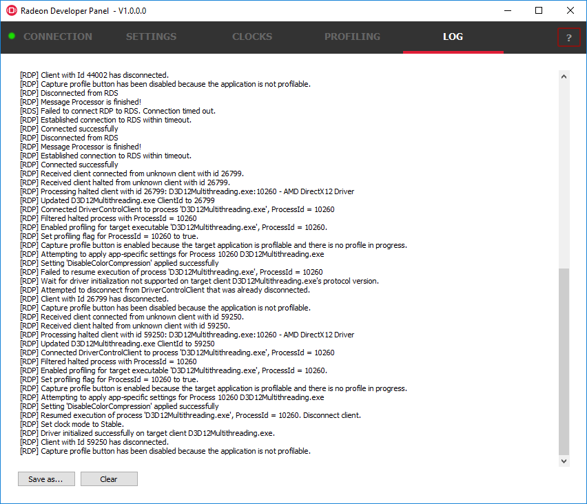
The Radeon Developer Service¶
Two version of the Radeon developer service are provided, one with a configuration UI and system tray icon, and one designed for use with headless GPU system where no UI can be supported.
Radeon Developer Service for desktop developer system¶
RadeonDeveloperService(.exe) – Can be used for general use where the system has a monitor and UI (e.g. desktop development machines). The Radeon Developer Service includes a configuration window containing basic service configuration settings and software info. Double click the Radeon Developer Service system tray icon to open the configuration window, or right-click on the system tray icon and select ‘configure’ from the context menu.
{kind=link}
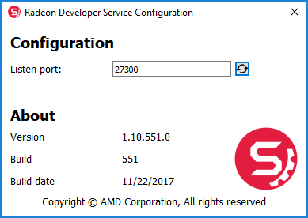
- Listen port – The port that the Radeon Developer Service uses to listen for incoming connections from a remote Radeon Developer Panel. The default port is 27300. Altering the port will disconnect all existing sessions. The circular arrows icon to the right of the Listen port field can be clicked to reset the port to the default value.
- Version info – Software version information for the Radeon Developer Service.
Double click the Radeon Developer Service system tray icon again or right-click on the system tray icon and select ‘configure’ from the context menu to close the configuration window.
Please note that when running both the Radeon Developer Panel and the Radeon Developer Service on the same system the communication between the two uses pipes, not sockets and ports, so setting the port has no effect.
Radeon Developer Service for headless GPU systems¶
RadeonDeveloperServiceCLI(.exe) – Command line version for use with headless GPU systems where no UI can be provided. NOTE: This version can also run on a system that has a monitor and UI.
The following command line options are available for RadeonDeveloperServiceCLI:
- – port <port number> Overrides the default listener port used by the service (27300 is the default).
- – enableUWP Enables UWP support (disabled by default).
Please note that the service will need to be explicitly started before starting the Radeon Developer Panel. If the service isn’t running, the Radeon Developer Panel will automatically start the UI version of the Radeon Developer Service, which may not be what is required.
Known Issues¶
Cleanup After a RadeonDeveloperServiceCLI Crash¶
If the RadeonDeveloperServiceCLI executable crashes on Linux, shared memory may need to be cleaned up by running the RemoveSharedMemory.sh script located in the script folder of the RGP release kit. Run the script with elevated privileges using sudo.
Windows Firewall Blocking Incoming Connections¶
Deleting the settings file. If problems arise with connection or application histories, these can be resolved by deleting the Radeon Developer Panel’s settings file at: “C:\Users\your_name\AppData\Roaming\RadeonDeveloperDriver\RDPSettings.xml”
on Windows. On Linux, the corresponding file is located at:
“~/.RadeonDeveloperDriver/RDPSettings.xml”
“Connection Failure” error message. This issue is sometimes seen when running the panel for the very first time. The panel tries to start the service automatically for local connections and this can fail. If you see this message try manually starting the “RadeonDeveloperService.exe” and connect again.
Remote connection attempts timing out. When running the Radeon Developer Service on Windows, the Windows Firewall may attempt to block incoming connection attempts from other machines. The best methods of ensuring that remote connections are established correctly are:
- Allow the RDS firewall exception to be created within the Windows Firewall when RDS is first started. Within the Windows Security Alert popup, enable the checkboxes that apply for your network configuration, and click “Allow access”.
{kind=link}
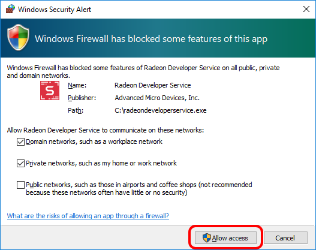
- If “Cancel” was previously clicked in the above step during the first run, the exception for RDS can still be enabled by allowing it within the Windows Control Panel firewall settings. Navigate to the “Allow an app or feature” section, and ensure that the checkbox next to the RadeonDeveloperService.exe entry is checked:
{kind=link}
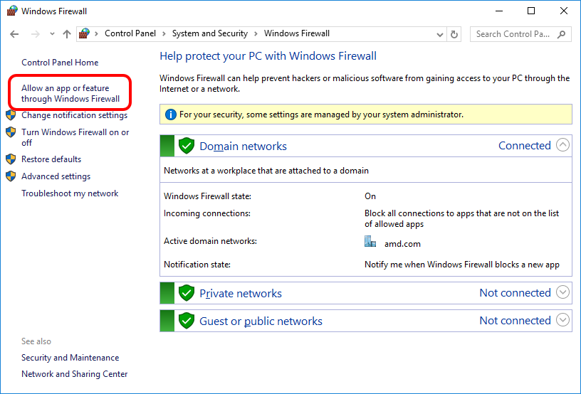
{kind=link}
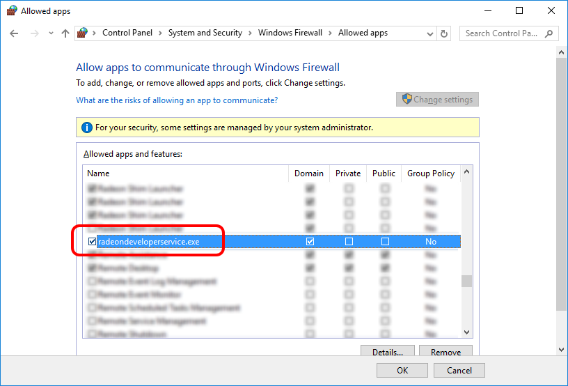
Alternatively, disable the Windows Firewall entirely will also allow RDS to be connected to.
NOTE The Windows firewall alert in no way indicates that the Radeon Developer tools are trying to communicate to an AMD server over the internet. The Radeon Developer tools do not attempt to connect to a remote AMD server of any description and do not send personal or system information over remote connections. The Radeon Developer Panel needs to communicate with the Radeon Developer Service, which may or may not be on the same machine, and a connection needs to be made between the two (normally via a socket).
Disabling Linux Firewall¶
If the remote machine is running Linux and the “Connection Failure” error message is displayed, the Linux firewall may need to be disabled. This is done by typing “sudo ufw disable” in a terminal. The firewall can be re-enabled after capturing by typing “sudo ufw enable”.
Setting GPU clock modes on Linux¶
Adjusting the GPU clock mode on Linux is accomplished by writing to /sys/class/drm/card<n>/device/power_dpm_force_performance_level, where <n> is the index of the card in question. By default this file is only modifiable by root, so the application being profiled would have to be run as root in order for it to modify the clock mode. It is possible to modify the permissions for the file instead so that it can be written by unprivileged users. The Radeon GPU Profiler package includes the “scripts/EnableSetClockMode.sh” script which will allow setting GPU clock mode in cases where the target application is not, or cannot, run as root. Execute this script before running the Radeon Developer Service and target application, and the GPU clock mode can be updated correctly at runtime.
Radeon Developer Panel connection issues on Linux¶
The Radeon Developer Panel may fail to start the Radeon Developer Service when the Connect button is clicked. If this occurs, manually start the Radeon Developer Service, select localhost from the the Recent connections list and click the Connect button again.
Missing Timing Data for DirectX 12 Applications¶
To collect complete profile datasets for DirectX 12 applications, the user account in Windows needs to be associated with the “Performance Log Users” group. If these privileges aren’t configured properly, profiles collected under the user’s account may not include all timing data for GPU Sync objects.
A batch file is provided to add the current user to the group (scripts\AddUserToGroup.bat). The batch file should be run as administrator (Right click on file and select “Run as Administrator”). The script’s output is shown below:
{kind=link}
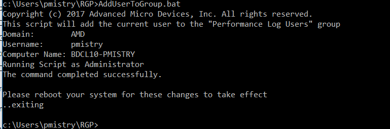
Alternatively, to manually add the active user to the proper group, follow these steps:
- Open the Run dialog by using the Windows Start menu, or through
the Windows + R shortcut.
- Type “lusrmgr.msc” into the Run window, and click OK.
{kind=link}
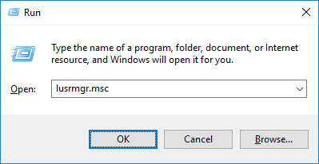
- Within the “Local Users and Groups” configuration window that opens,
select the Groups node.
- Select the Performance Log Users entry. Right-click and select Properties.
{kind=link}
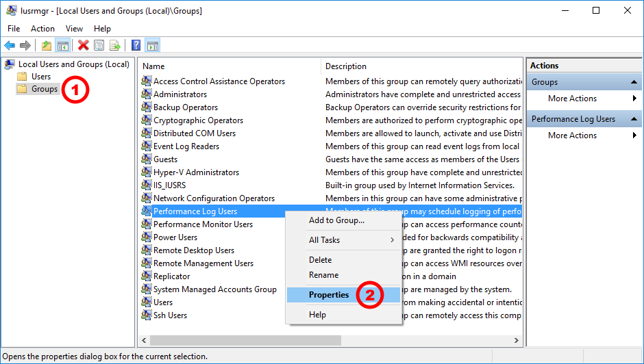
- To add the active user to the group, click the Add… button. (If the active user appears within this list, the account is already configured properly.)
{kind=link}
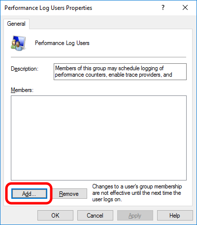
- Type the active user’s account name into the Select Users, Computers, Service Accounts, or Groups dialog, and click OK.
{kind=link}
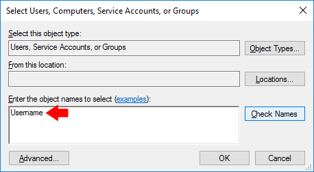
- When the user has been added to the group, restart the machine and log back in. RDS should now be configured to collect full timing information for DirectX 12 applications.
Radeon Developer Service Port numbers¶
Please note that when running both the Radeon Developer Panel and the Radeon Developer Service on the same system the communication between the two uses pipes, not sockets and ports, so setting the port has no effect. In this scenario, it is possible to set the service to listen on a no-default port, leave the panel on the default port, and connection will work fine. This is a UI bug.
Problems caused by the presence of non-AMD GPUs and non-AMD CPUs with integrated graphics¶
The presence of non-AMD GPU’s and CPU’s on your system can cause the failure to generate a profile or apps to not run at all.
These problems typically occur with Vulkan apps in systems that have:
- A non-AMD CPU with in integrated non-AMD GPU
- A non-AMD discrete GPU
Vulkan applications, by default, use GPU 0 which usually maps to the integrated GPU, or in some cases, the non-AMD discreete GPU. In both cases Vulkan apps will either fail to run, or RGP profiling will not work (no RGP overlay will be present in these cases).
To avoid these issues:
- Disable any non-AMD integrated GPU’s in the device manager
- Disable any non-AMD discrete GPU’s in the device manager, and/or physically remove from the system.